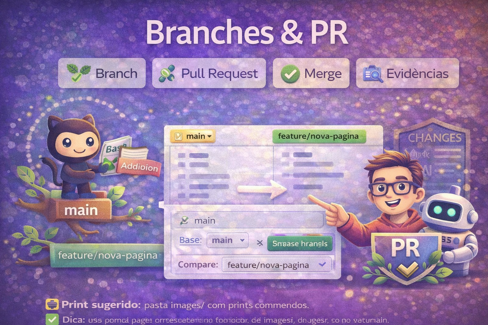
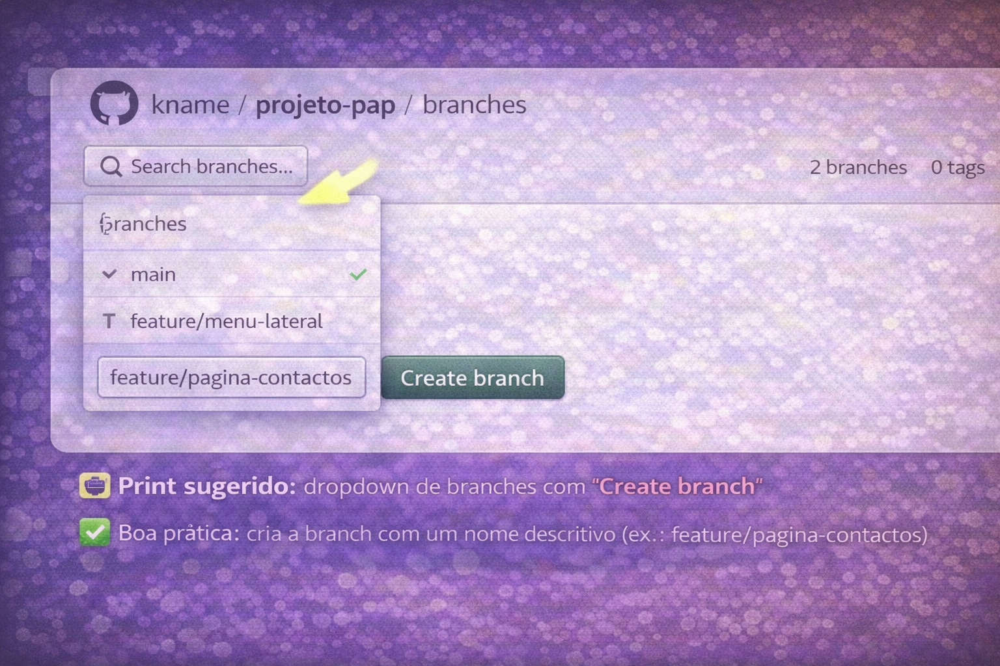
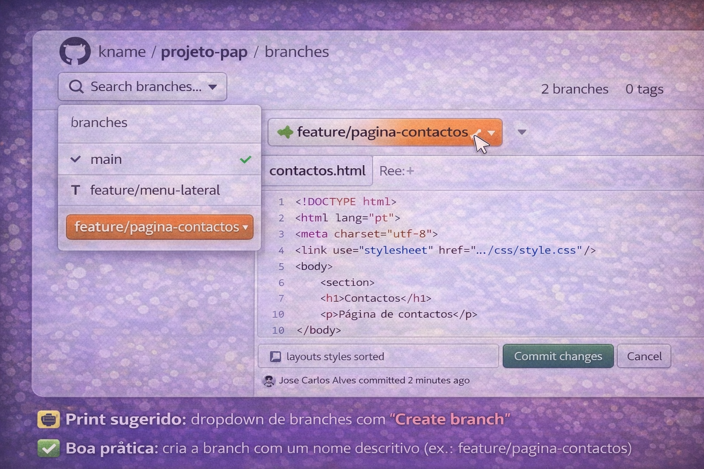

Branches e Pull Requests são a forma mais segura de trabalhar num projeto:
crias uma branch para fazer alterações sem mexer na main e,
quando estiver pronto, abres um Pull Request para integrar as mudanças.
Num contexto de PAP, isto ajuda a mostrar evolução, evitar erros graves e criar evidências claras
(prints do PR, do merge, e do histórico).
🌿 Branch🔁 Pull Request✅ Merge🧾 Evidências

O que significam (em linguagem simples)
Antes dos cliques, percebe a lógica.
main: versão principal (a que deve estar sempre “estável”).
branch: cópia “paralela” para testar alterações sem risco.
Pull Request: pedido para juntar a branch à main (com revisão e histórico).
merge: ação final que junta as alterações.
Regra prática: se a alteração for grande (nova página, nova funcionalidade, grande refatoração),
cria uma branch. Se for pequena (corrigir texto), podes fazer direto na main.
No repositório, troca de branch e cria uma nova a partir da main.
No topo do repositório: botão main → escrever o nome da branch → Create branch.
📸 Print sugerido: dropdown de branches com “Create branch”

✅ Boa prática: cria a branch com um nome descritivo (ex.: feature/pagina-contactos).
2
Fazer alterações na branch
Edita/Carrega ficheiros (por exemplo: criar uma nova página HTML ou atualizar docs).
Faz alterações apenas na branch. No final, confirma se estás mesmo na branch correta
(no topo aparece o nome da branch).
📸 Print sugerido: ficheiro alterado e branch visível no topo

📌 Sugestão: usa uma mensagem de commit clara (verbo + objeto).
3
Abrir Pull Request (PR)
Comparar branch → main e criar o PR com descrição do que foi feito.
Normalmente aparece um botão “Compare & pull request”. Se não aparecer:
Pull requests → New pull request e escolhe:
base: main e compare: tua-branch.
📸 Print sugerido: criação do PR (base main / compare branch)
📝 Dica: escreve no PR o que mudaste e porquê (isto conta como evidência).
4
Fazer merge (juntar à main)
Depois de rever, carrega em Merge pull request.
Se aparecer conflito, o GitHub vai pedir resolução. Para já, evita conflitos alterando ficheiros diferentes
em cada branch ou fazendo pequenas alterações de cada vez.